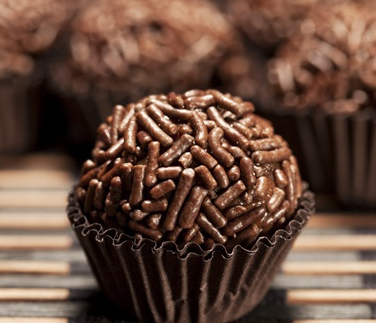

Resep Hari ini
Bola-Bola Coklat

Bahan-bahan
200 gram biscuit marie, haluskan
3 sdm mentega, cairkan
2 sdm cokelat bubuk
100 gram kacang almond cincang
1/2 kaleng skm cokelat
Bahan Pelapis
200 gram cokelat batangan, cairkan
100-150 gram meises cokelat
Cara Membuat
Campur rata semua bahan
Uleni sampai bisa dibetuk bola-bola, simpan dalam lemari pendingin selama kurleb 30 menit.
Cairkan cokelat, dan balur permukaan bola-bola cokelat sampai rata
Gulingkan bola-bola cokelat yang sudah dilapis tadi dengan meises sampai rata
Sajikan
Tips :
Gunakan Meises warna warni atau sprinkle untuk tampilan yang lebih menarik
Hasil jadi sekitar 25 buah